|
Langley Research CenterTurbulence Modeling Resource |
Note that the use of overbars and hats, indicating time averaging and density-weighted averaging (described on the page
Implementing Turbulence Models into the Compressible RANS Equations)
is not always followed on this page or throughout the
rest of the website. Often, they are dropped for convenience.
Notes on Running the Cases with CFD
1. It is important to note that most of the cases described on this
website were run using NONDIMENSIONAL CFD codes that solve the compressible Reynolds-averaged Navier-Stokes
equations for an ideal, calorically-perfect gas. Therefore, the descriptions of the cases give
a Reynolds number per unit length (referenced to the grid provided) and a Mach number.
These parameters completely define the problem (a temperature is also specified
for determining the dynamic viscosity via Sutherland's law, but this does not have as significant an influence on
the resulting flowfield as Re and M).
If you are running using a dimensional code on the
provided grids, it is crucial that you at least set conditions to match the prescribed Reynolds number and
Mach number exactly.
Let us use the
Flat Plate Verification Case as an example. That case specifies
M=0.2, ReL=5 million, where L is unit 1 of the grid, and the plate portion of the grid is 2 units long.
(The Tref=540R=300K is also specified; it is used solely as an input to
Sutherland's law (for example)
for determining the dynamic viscosity.)
These parameters completely define the problem.
For a dimensional code, one must choose units, and force the
input choices to yield the correct Re and M. For this case the goal
is to put this plate in a "virtual wind tunnel" so as to achieve
Re=5 million per unit length and M=0.2.
For example, one could assume that the flat plate grid is in meters.
Choose a speed of sound. It can be anything, but say it is 342 m/s.
(Depending on your particular code, other inputs would have to be consistent with this choice, assuming an ideal gas.)
Thus, reference velocity must be chosen as 0.2 times 342 = 68.4 m/s.
Then, reference kinematic viscosity must be chosen so that Re per meter is 5 million:
i.e.,
As another example, assume that the flat plate grid is in feet.
Choose speed of sound to be (say) 1122 ft/s.
Reference velocity must be 0.2 times 1122 = 224.4 ft/s.
Reference kinematic viscosity
must be chosen so that Re per foot is 5 million: i.e.,
Further details about the nondimensional codes used on this website:
the Prandtl number Pr is taken to be constant at 0.72, and turbulent Prandtl
number Prt is taken to be constant at 0.9.
The dynamic viscosity is computed using
Sutherland's Law (See White, F. M., "Viscous Fluid Flow," McGraw Hill, New York, 1974, p. 28).
In Sutherland's Law, the local value of dynamic viscosity is determined by plugging the local value of temperature
(T) into the following formula:
where
where
2. As discussed elsewhere on this site, note that
all cases are compressible flow verification and validation cases.
Although many are at low Mach numbers such that the flow is "essentially" incompressible,
if you run with an incompressible code your results will not exactly correspond with the
compressible code results given here.
3. Throughout the webpages, there are many comparisons
with experimental
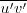,
here referred to as "turbulent shear stress."
(Officially, the turbulent shear stress is
Depending on the turbulence model, the where 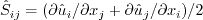, and
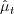 is the eddy viscosity
obtained by the turbulence model.
Therefore, for the turbulence models that use the Boussinesq relation,
can be computed from:
4. There is sometimes confusion with regard to the form
of the production term when the Boussinesq relation is invoked. The Boussinesq relation is:
as described in (3) above. Now, for example, the k production term is:
For incompressible flows, this exactly becomes:
Many references cite the above incompressible form of the production term. Except for very high Mach number flows (e.g.,
arguably 5. All of the cases on this website are intended to be run as "fully
turbulent," in the sense that the RANS turbulence model should be active and engaged. However, it is recognized that
most models inherently "trip" on their own over some finite distance (which may be code and grid dependent for a given case).
See, e.g., AIAA Journal, Vol. 47, No. 4, April 2009, pp. 982-993,
https://doi.org/10.2514/1.39947.
The main intent is that the tripping occurs reasonably quickly over the body
so that transition is a negligible issue for the cases given.
Some models give specific recommended freestream levels of turbulence for all situations,
some ask for the user to input values for freestream turbulence intensity (Tu) and freestream turbulence length scale or freestream eddy viscosity,
and some make no recommendations.
In the cases on this site, various approaches are taken. For CFL3D and FUN3D using the SA and SST/SST-V models, the freestream
levels are described on the VERIFICATION pages (see, e.g., the
SA Expected Results for Flat Plate page or the
SST Expected Results for Flat Plate page). Additional details can be found in the
CFL3D User's Manual, Appendix H.
These same freestream settings were used by these two codes for the VALIDATION cases as well. (Note that although freestream k is typically fixed
in CFL3D and FUN3D for two-equation models, due to the nondimensionalization used the resulting turbulence intensity (Tu)
is a function of reference Mach number, so Tu varies from case to case).
For some of the other contributed code results, different freestream turbulence settings were used, and for
some codes the freestream turbulence settings are not known. This inconsistency/uncertainty in freestream turbulence levels may contribute to some of
the (usually minor) code-to-code differences in results on the VALIDATION pages.
Presumably, however, the very close agreements between codes is an indication that the freestream turbulence levels used by the various codes
are sufficient to ensure adequate "fully turbulent" flow while not being so unphysical as to corrupt the turbulent solutions.
For example, see the bottom of the page
SST Expected Results for Flat Plate for a quantification of the effects
that freestream turbulence levels have on fully turbulent flat plate solution measures of interest.
6. Many of the cases are evaluated based on surface skin friction coefficient,
surface pressure coefficient,
lift coefficient, and/or drag coefficient. The definitions of these are "standard" and can be found in many textbooks or on
websites such as
CFD-ONLINE or
Wikipedia.
Surface skin friction coefficient is defined by:
7. Many of the cases on this
website were run using the NASA LaRC CFD codes
CFL3D and
FUN3D.
These codes both solve the
compressible Reynolds-averaged Navier-Stokes (RANS) equations.
As described in detail in Note 1 above, they
both use Sutherland's law for the dynamic viscosity (White, F. M., "Viscous Fluid Flow," McGraw Hill, New York, 1974, p. 28),
Prandtl number Pr is taken to be constant at 0.72, and turbulent Prandtl number Prt is taken to be
constant at 0.9.
These and other details can be found on the respective websites for these codes.
Unless otherwise noted, the runs using both CFL3D and FUN3D throughout the TMR web pages were made with the following:
8. In the description of
the various turbulence models, it is implicitly presumed that variables that appear in denominators never reach zero (i.e.,
division by zero should never occur). In practice in CFD codes, this may be enforced in different ways; but the precise method is
generally not specified in the description of the turbulence model itself.
Thus, potential inconsistencies in implementation may exist at this level between codes
that otherwise have identical coding. It is assumed that this level of inconsistency would yield insignificant differences.
Note that (similar to the mean flow quantities density and pressure),
many of the turbulence quantities should
always remain non-zero and positive in the flowfield away from boundaries, including
k, omega, kL, mu_t, Rt, and epsilon.
9. Unless otherwise explicitly stated,
the equations on this site assume an inertial frame of reference. If you are computing in a non-inertial frame
(for example, in a rotating reference frame), then you will need to appropriately account for it in the mean flow
and turbulence equations. In the turbulence equations, the most common impacted term is the vorticity. The
SA-RC and
SST-RC models include accounting for a rotating reference frame.
10. A note on "verification."
The type of verification used for this site (verification by code-to-code comparisons along with grid-convergence study) is relatively weak,
but it can at least indicate if there is a likely problem in your turbulence model implementation. A better method of verification
is Method of Manufactured Solutions (MMS), briefly talked about on the
Information from Lisbon "Workshop on CFD Uncertainty Analysis" series page.
You can also find information in the open literature.
In any case, a properly-conducted grid-convergence study is crucial to drawing the right conclusions.
The following aspects are very important. First of all, note that:
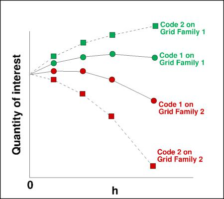
It is crucial to understand what is meant by a "grid family" when performing global grid refinement.
In a proper grid family, each successively
coarser grid is a subset of the next finer one, with every grid cell size changing consistently in all directions.
A proper grid family can be made with
structured grids very easily, by making the finest possible grid, then removing every other point in each coordinate direction
for the next coarser level.
(This is done for most of the verification cases on this site.) It is also possible to create a grid family with
other-than-factor-of-2-in-each-coordinate-direction variation, but this takes more work.
It is much more difficult to create a proper grid family for
unstructured grids (see, for example, the VERIF/2DMEA case).
A proper grid family will ALWAYS have all of its grid cell spacings in every region of the flow
continually and consistently decreasing with each successively finer grid.
When one makes use of grids that are NOT of the same family, it may be difficult to tell where the solution is heading with
grid refinement.
This concept is notionally illustrated in the following sketch:
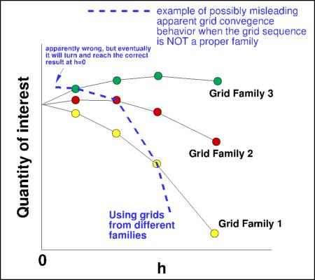
Naturally, some regions of the flow may benefit from grid refinement more than others; but it is a bad idea to try to guess.
Creating a grid family avoids the guesswork, although it can be expensive (especially for 3-D flows).
Adaptive mesh refinement (not covered here) is a technique that automatically and accurately determines how/where grid refinement is needed,
and therefore has the capability to approach the infinite-grid solution with fewer grid points than with global grid refinement.
This discussion did not go into order-of-accuracy analysis, which can also be an important component of a grid-refinement study.
There is much in the open literature on this. See, for example, Roy et al., Journal of Aircraft Vol. 55 No. 4, 2018, pp. 1338-1351,
https://doi.org/10.2514/1.C034856 or
Oberkampf, W. L., and Roy, C. J., Verification and Validation in Scientific Computing, Cambridge Univ. Press, Cambridge, England,
U.K., 2010.
11. A note on the plotting of
grid convergence results. On these web pages, quantities of interest (QoI) such as lift coefficient, drag coefficient,
etc. are plotted as a function of a measure of "characteristic" grid spacing (h) on a proper family of grids
(defined as h=(1/N)(1/d), where N is the grid size or number of unknowns, and d is the dimensionality: 2 for 2-D
and 3 for 3-D).
Here, we show how the results from codes with different
spatial orders of accuracy behave when plotted in this - and other - ways.
First, we construct "made up" solutions for 4 codes, each of which behaves spatially perfectly as
either 1st, 2nd, 3rd, or 4th order.
In this "perfect" toy problem, solutions on a
sequence of 10 grids are artificially created. In all cases, the exact solution (h=0) is taken to be 1.0.
For the first order result, the error from the exact solution
is C1*h, where C1 is a constant. For the second order solution, the error is C2*h2, where C2 is a (different)
constant. For 3rd and 4th order, the error is C3*h3 and C4*h4, respectively.
(It is important to note that the constants can be anything, and will likely
be different for different codes and cases.) When log(error) is plotted as a function of log(h), the following plot
results. In each case, the plots are straight lines with slope equal to the respective spatial order of accuracy.
(The constants determine the vertical location, up or down, on the plot.)
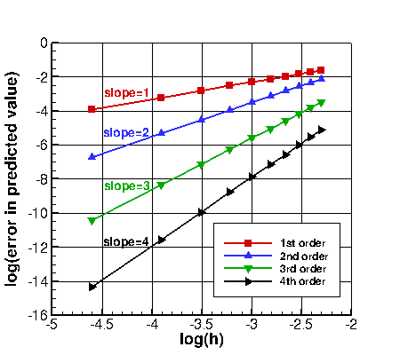
Typically, the exact solution is not known, so the QoI itself may be plotted instead. For this toy problem, the error is
added to the exact solution, so the solutions all approach the exact result from above. (They could just as
easily approach from below.) In the first plot shown below, the QoI is plotted
as a function of h. When plotted in this way, the first order solution appears as a straight line, heading
directly toward the exact solution at h=0. On the other hand, the higher order solutions asymptote toward the exact solution,
with their curves looking flatter as they approach h=0. The higher the order, the flatter the curve appears in the plot.
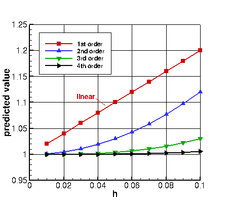
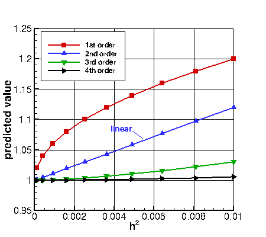
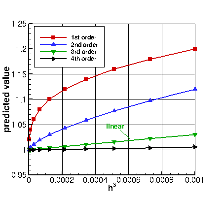
In the second plot above, the same QoI is plotted as a function of h2. In this case, the second order
solution appears as a straight line, heading directly toward the exact solution at h=0. The first order
solution curves downward (toward the exact solution), while the third and fourth order solutions asymptote,
flattening as they approach h=0. The third plot above shows the QoI plotted as a function of h3.
This time, the third order solution is a straight line.
Similarly, if plotted vs. h4, the fourth order solution would
appear as a straight line (not shown here).
In all cases of this toy problem, each result is correctly approaching the exact solution, which is not perfectly reached until h=0.
Each solution is approaching according to its own prescribed order of accuracy.
Throughout this website, grid convergence plots are made with h along the x-axis, like the first plot above.
Therefore, depending on the spatial order
behavior for the particular code/QoI at hand,
the curves may be close to straight (behaving roughly 1st order), asymptoting/flattening (behaving higher than 1st order),
or accelerating as h approaches zero (behaving lower than 1st order).
Note, however, that in reality, codes typically behave close to their expected spatial behavior only for very simple, smooth
problems on extremely regular grids. On real problems with typical grids, codes may or may not behave with the order
behavior expected. And sometimes they may behave as expected for some QoI but not for others.
It is also possible that a given curve may be nonmonotone and/or
nonsmooth, possibly rising then falling or behaving erratically. Such behavior can result
when some or all of the grids are too coarse for the problem (often such cases are said to be "outside the range of
asymptotic grid convergence"). Sometimes the coarser grids in a family behave as if outside the asymptotic range, but the
finer grids behave more rationally.
The overall order of accuracy behavior may be affected by lower order boundary conditions, turbulence model order
of accuracy, insufficient iterative convergence,
nonsmooth grids, geometric singularities such as sharp corners, nonsmooth flowfield features, lack of
sufficient resolution of particular flow features, and roundoff error interfering before the solutions reach
asymptotic grid convergence.
Because the CFD codes used on this site are nominally second order spatially accurate, we typically expect to see QoI that
appear to asymptote (flatten) as h approaches zero in plots of QoI vs. h. However, this is not always the case (as discussed
above).
Return to: Turbulence Modeling Resource Home Page
Recent significant updates: Responsible NASA Official:
Ethan Vogel
 must be
1.368 x 10-5 m2/s.
must be 4.488 x 10-5 ft2/s.
must be
1.368 x 10-5 m2/s.
must be 4.488 x 10-5 ft2/s.

 ,
,
 , and
, and
 .
The same formula can be found online
(with temperature constants given in degrees K and some small conversion differences).
Note that in terms of reference quantities, Sutherland's Law can equivalently be written:
.
The same formula can be found online
(with temperature constants given in degrees K and some small conversion differences).
Note that in terms of reference quantities, Sutherland's Law can equivalently be written:

 is the reference dynamic viscosity that typically corresponds to the freestream, and
is the reference dynamic viscosity that typically corresponds to the freestream, and
 is given for each problem of interest.
This latter form may be more convenient for nondimensional codes.
(Specific details regarding an implementation of Sutherland's Law in nondimensional codes can be found in
handwritten notes describing Sutherland's Law in CFL3D and FUN3D.)
is given for each problem of interest.
This latter form may be more convenient for nondimensional codes.
(Specific details regarding an implementation of Sutherland's Law in nondimensional codes can be found in
handwritten notes describing Sutherland's Law in CFL3D and FUN3D.)
 , with this giving the proper units for a stress.
However, for low-speed flows with density approximately constant,
it is very common to also refer to
as the "turbulent shear stress," even though its units are velocity squared.)
The equations for are as follows.
First, use the definition: 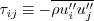
(see Implementing Turbulence Models into the Compressible RANS Equations page).
Here, the double prime is used for Favre-averaged variables. Since most cases on the website are at
low Mach numbers such that the flow is "essentially" incompressible, we will use
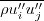 and
interchangeably.
Thus:
, with this giving the proper units for a stress.
However, for low-speed flows with density approximately constant,
it is very common to also refer to
as the "turbulent shear stress," even though its units are velocity squared.)
The equations for are as follows.
First, use the definition: 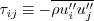
(see Implementing Turbulence Models into the Compressible RANS Equations page).
Here, the double prime is used for Favre-averaged variables. Since most cases on the website are at
low Mach numbers such that the flow is "essentially" incompressible, we will use
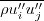 and
interchangeably.
Thus:
 may
be solved directly (e.g., full RSM), may be given by a complex nonlinear equation (e.g., explicit algebraic stress),
or may be given by the simple Boussinesq relation:
may
be solved directly (e.g., full RSM), may be given by a complex nonlinear equation (e.g., explicit algebraic stress),
or may be given by the simple Boussinesq relation:
 , depending on the case), Pinc is
often a very good approximation for P.
, depending on the case), Pinc is
often a very good approximation for P.
where typically the "ref" density and velocity are freestream, but
this may depend on the case.
The 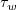 is the wall shear stress
where 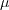 is the dynamic viscosity,
u' is the velocity along the boundary (parallel to the wall), n is the
direction normal to the wall, and subscript "w" indicates at the wall.
Because (for most aerospace applications) the x-direction is generally used as the
"downstream" direction, the skin friction coefficient is often defined to be
positive or negative based on the sign of
the u-velocity component of u' (i.e., based on the sign of the x-direction component
of the skin friction coefficient). In 3-D, this practice may be somewhat ambiguous.
Surface pressure coefficient is defined by:
Here, the "ref" pressure, density, and velocity are again typically freestream, but
this may depend on the case.
Lift coefficient is defined by:
where L is the lift force and A is the reference area (in 2-D it is reference length, or area per unit span).
Similarly, drag coefficient is defined by:
where D is the drag force.
(More recent versions of the CFL3D and FUN3D codes allow most of the above defaults to be overridden.)
Note: as of the time of this writing, both CFL3D and FUN3D solve the nonconservative form of all turbulence
equations by default (e.g., carrying k and omega rather than rho*k and rho*omega).
These concepts are illustrated in the sketch below. Here, two different codes/schemes are run on two different grid families. When plotting
the quantity of interest as a function of some measure of the mean grid spacing (h), you can see that there is only one correct
answer on an infinite grid (h=0). But both codes and both grid families approach the infinite-grid result differently.
Even on the finest grids illustrated here (left-most symbols), there is a difference between results for the same code on
different grids, and there is a difference between results for different codes on the same grid.
One can never reach h=0, so the goal is typically to achieve a level of grid refinement that makes the error
reasonably small.
Note that some level of "intelligent grid design" is important. A grid with horribly misplaced points may yield very poor
results even with h very small.
Here, the solid lines indicate CFD results from a given code/scheme using 3 different grid families. They all approach the
same infinite-grid result, as expected. On the other hand, the
dashed line indicates CFD results on finer and finer grids that are NOT of the same family. As can be seen,
without a proper grid family, it is possible to be misled regarding what the infinite-grid solution should be, particularly if
the finest grid used is not close enough to h=0. This is because it is not possible to establish an order property or have
a true asymptotic range in this case. Note: if you create
a sequence of grids all with the same fixed minimum spacing at the wall, then the sequence is NOT of the same family.
In fact, if ANY region of the grid does not refine uniformly and multidirectionally
with successively finer versions, then it is not a proper grid family.
1/26/2023 - added note 11
7/29/2021 - added note 10
4/12/2021 - additional clarification regarding nonconservative form used in Note 7
3/21/2019 - additional detailed information given in note 1 regarding Pr, Prt, and Sutherland's Law
2/12/2018 - clarification about details in CFL3D and FUN3D runs for the TMR site
4/27/2017 - added note 9
6/29/2016 - added note 8
5/19/2016 - minor revision to note 6
8/8/2014 - added note 7
3/20/2014 - added note 6
7/15/2013 - added/revised note 5
Page Curator:
Clark Pederson
Last Updated: 01/29/2023